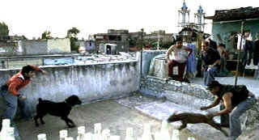

| Amores
Perros (SE)/ A-,B |
| Studio S/2000/153/ANA 1.85 |
The structure will remind you of Pulp Fiction, the pulsing
musical beat is familiar urban action fare, but that's just the surface dressing. Underneath
is searing , unusual drama set in contemporary Mexico City. The world of high fashion and magazines
meets down and dirty dog fighting while a wild-haired scavenger stalks the streets.
Amores Perros doesn't start at the beginning or at the end; it does
start with explosive energy featuring a breathtaking bloody car chase. Octavio is one the run. In the back seat of his car a bloody black mass is revealed as a dog. The next thing you know you're
watching a dog fight in a makeshift gutted slum space. It's vicious business. One dog doesn't leave
the ring. For the feint at heart, Amores Perros may be too tough at the outset, but if you
can hang through some of the blood, you're in for a extraordinary look at a world seldom glimpsed.
 |
| Auditioning for the ring. ©Studio S |
Octavio's world collides with fashion model Valeria and magazine
publisher Daniel. This section is part romance, part horror. Valeria is the cover girl of the hour,
her image plastered on huge billboards overlooking the city. Daniel's marriage struggles with the
temptation of fresh beauty exciting beauty.
The third segment of Amores Perros features El Chivo, a hit man of a a
different order. A lost soul who finds solace amongst wild dogs, he is an urban figure forever
etched on your memory. El Chivo must face his past and the ironic consequences of his acts before
closing the film's cycle.
Director Alejandro González Iñárritu is brilliant at blending the three
stories into one narrative. The pacing is patient yet never drags. It's hard to believe that this
film ran two-and-a-half hours plus. Each story gets it's due. It's a terrific script from
Guillermo Arriaga Jordan. He weaves the stories from various fabrics into a powerful tapestry. A
slick, driving, score by Gustavo Santaolalla carries the beat of the movie with effective rhythms.
Cinematography by Rodrigo Prieto embellishes the gritty feel of the streets with the power of a
documentarian's eye.
Iñárritu works beautifully with his actors eliciting natural performances with
remarkable consistency. Emilio Echevarría is thoroughly frightening as El Chivo. But he digs
painfully deep into this character rewarding audiences with a fascinating performance. Gael García
Bernal and Vanessa Bauche are wonderfully natural as Octavio and Susanna. Goya Toledo and Álvaro
Guerrero are likewise outstanding as Valeria and Daniel.
The transfer adequately delivers the artistic intent of Amores
Perros. The image is somewhat grainy accurately capturing the documentary intent. What is
lacks in slickness it pays back with authenticity. Colors are slightly desaturated, again apparently
consistent with the original material. There's a few specs of dirt on the source material, but it's
hardly worth mentioning. The image is sharp enough and shadow detail is thoroughly revealing.
Interesting lighting schemes are transferred with respect. The music highlights the Dolby Digital
5:1 track. Bass response is excellent. Surround details are well located. Removable yellow
English subtitles are easy to read. You have must select the option from the Special Features
Languages menu.
Audio commentary with English subtitles? That's the heart of this
special edition. Director Alejandro González Iñárritu articulately describes his intent in
color schemes and character details. There's also a making of of featurette and a short featurette
on the dogs of Amores Perros and an analysis of the car chase. About ten deleted scenes complete
this original package.
|
|
|
|

Selections from the Feature Archive include articles on
Akira Kurosawa, Blonde Bimbos,
Frank
Darabont, Steven Culp,
John
Herzfeld or Vietnam: The
Hollywood Pariah, and many more....
The
Exquisite Muse of Zhang Yimou

The powerful image-making of Zhang Yimou has revealed itself in
virtually every film he has made. Coupled with his remarkable collaboration with actress Gong Li,
Zhang's has built a stunning body of work Click the image to read all about it.

 Have you visited Home Theater
Talk lately? One of the friendliest places on the Net for Home Theater and DVD discussion, you
can get help for installation problems or simply share your opinions with other Vidiots. Have you visited Home Theater
Talk lately? One of the friendliest places on the Net for Home Theater and DVD discussion, you
can get help for installation problems or simply share your opinions with other Vidiots.

Nearly 40 key software and
hardware companies representing leading consumer electronics giants, major movie studios home video
and music video units have joined forces to establish the DVD Video Group.

DVD news, reviews, forums: Jump right in!

DVD Dimensions sells DVDs from an easy
to use online interface.

Specializing in DVD reviews, DVD Authority boasts almost 400 reviews in an easy to use, elegant,
interface.

One of the prime resources for DVD information: rumors,
reviews and news.

Formerly Best Bets on Laser. And so it goes.
|